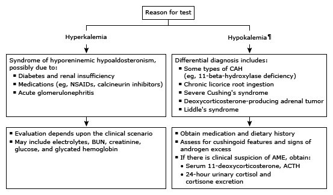

Initial evaluation of low renin and low aldosterone in adults*

This algorithm is intended for use with additional UpToDate content on hypoaldosteronism.
NSAID: nonsteroidal anti-inflammatory drug; CAH: congenital adrenal hyperplasia; BUN: blood urea nitrogen; AME: apparent mineralocorticoid excess; ACTH: corticotropin; PRA: plasma renin activity; PRC: plasma renin concentration; PAC: plasma aldosterone concentration. * Renin can be measured in terms of its enzymatic activity (PRA) or its mass (PRC). The normal range for PRA in seated individuals in the morning is approximately 1 to 4 ng/mL per hour (0.8 to 3 nmol/L per hour). Corresponding PRCs are 8 to 35 mU/L. The normal range for PAC in seated individuals in the morning and with unrestricted salt intake is 5 to 30 ng/dL (140 to 830 pmol/L). Levels of renin and PAC may be affected by sodium intake, age, time of day, upright posture, and medication use. Interpretation of a specific abnormal test result should be based upon the reference range reported with that result. ¶ Hypertension is often present.